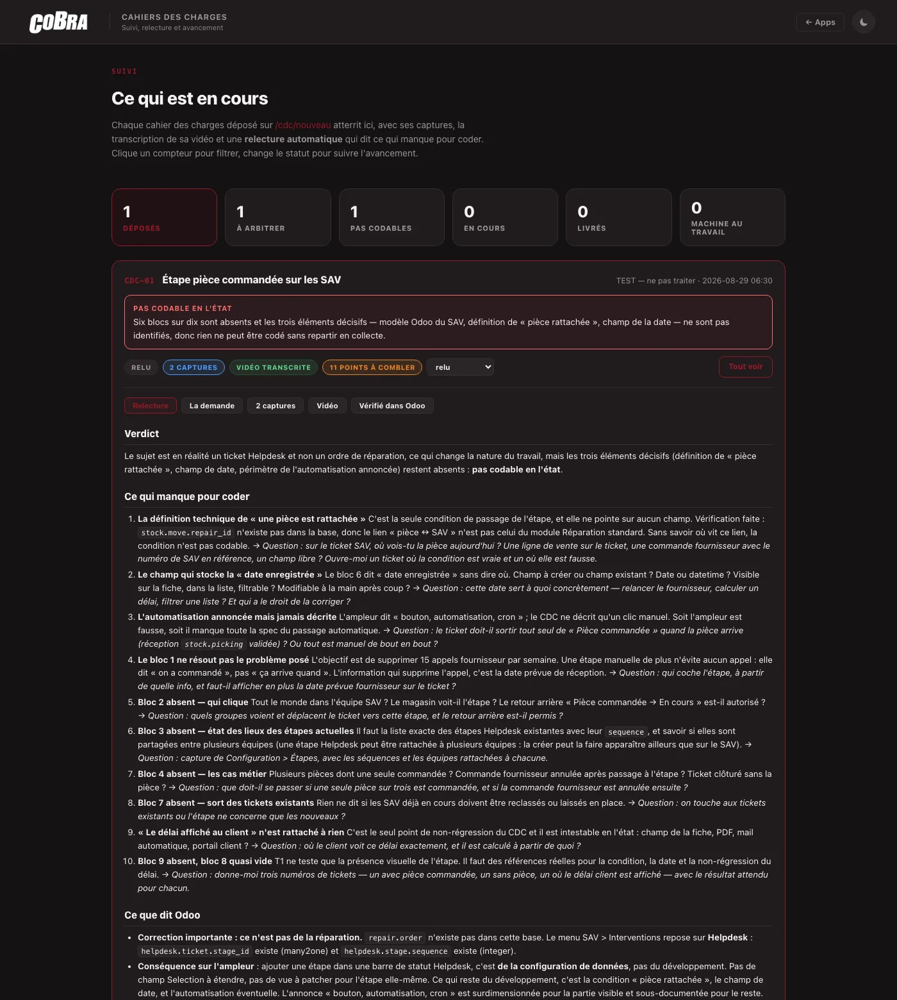
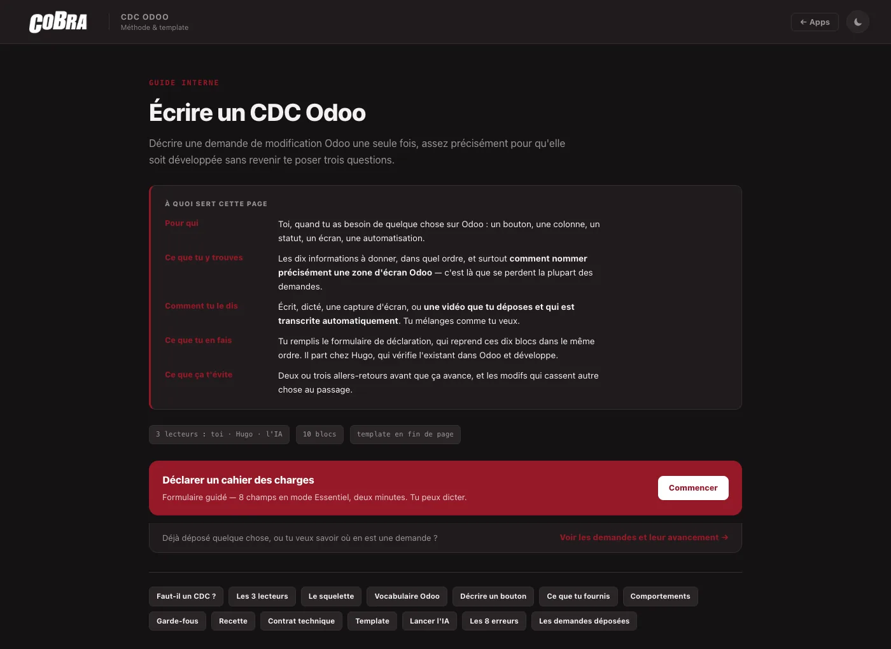
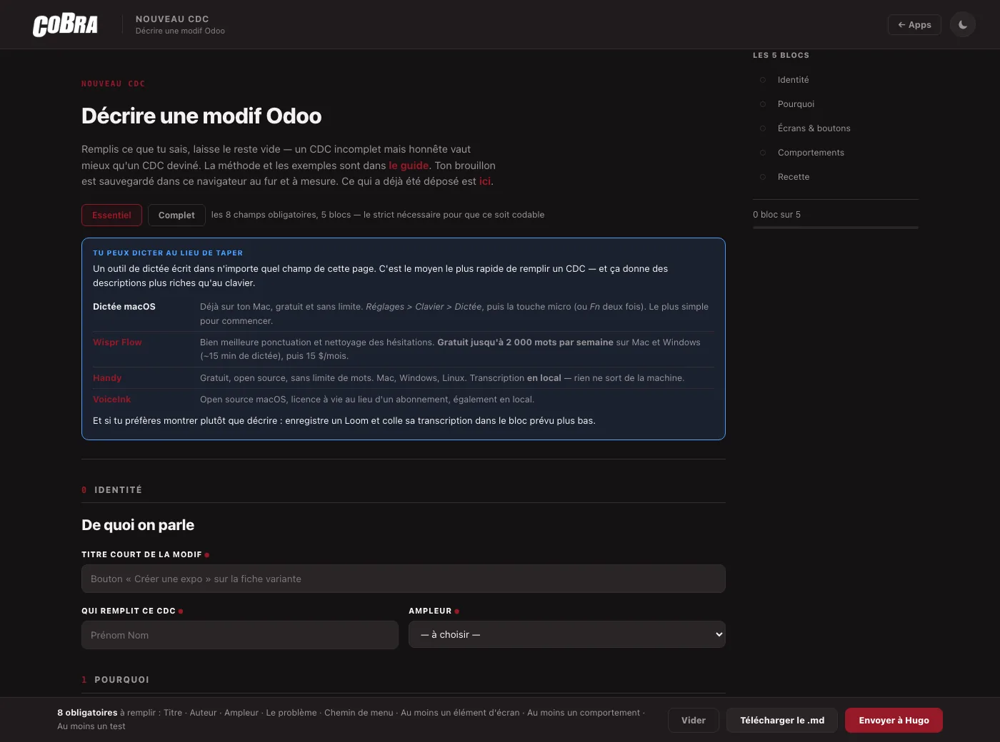
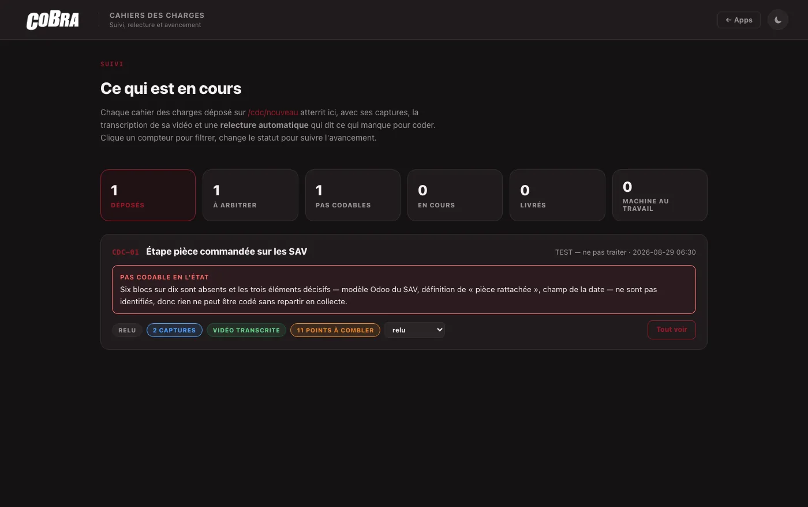
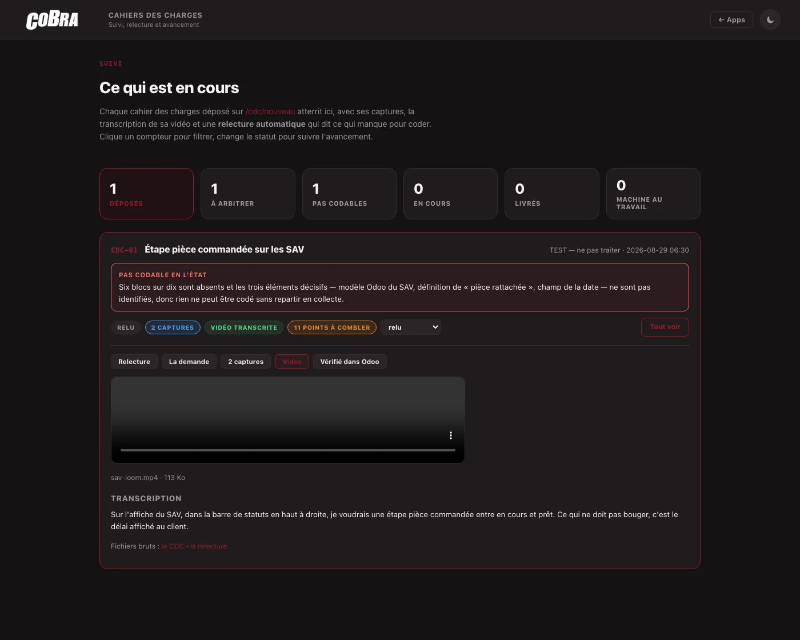
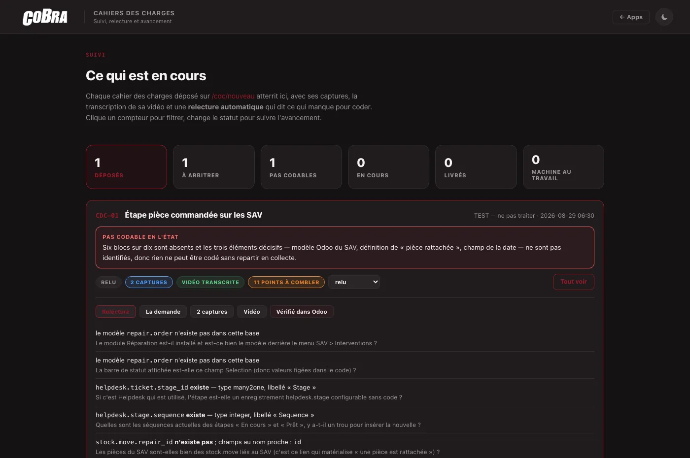

Cobra · Méthode
L'IA ne code pas ma demande, elle vérifie ce qu'elle suppose
Une chaîne interne où une demande de modification Odoo se décrit en 8 champs, se dépose avec ses captures et sa vidéo, et se fait relire automatiquement — la relecture allant vérifier dans la vraie base ce que la demande tient pour acquis.

Contexte
Les demandes d'évolution Odoo arrivaient en une ligne dans un message : « il faudrait un bouton pour… ». Il manquait toujours les trois mêmes informations — où exactement placer la chose, ce qui doit se passer au clic, et surtout ce qui ne doit pas bouger. Résultat : deux ou trois allers-retours avant que ça avance, et de temps en temps une modification qui casse autre chose au passage.
Ce qui a été fait
Une chaîne complète, du guide au suivi :
- Un guide de méthode : dix blocs à remplir, et surtout un vocabulaire pour nommer les zones d'un écran Odoo — « en haut à droite » désigne quatre endroits différents, et c'est là que se perdent la plupart des demandes.
- Un formulaire guidé : mode Essentiel à 8 champs obligatoires (deux minutes), mode Complet pour les dix blocs. Le bloc « garde-fous » devient obligatoire automatiquement quand l'ampleur choisie indique que la modification écrira de la donnée — 11 obligatoires au lieu de 8, sans que l'auteur ait à y penser.
- Le dépôt réel : captures en glisser-déposer, vidéo jusqu'à 400 Mo. Le serveur extrait l'audio et le fait transcrire ; la transcription est ajoutée en annexe de la demande. Plus rien à recopier.
- La relecture automatique en deux passes (le cœur, détaillé plus bas).
- Une page de suivi : verdict, ce qui manque, et un cycle de vie modifiable — à relire → relu → en cours → en preprod → livré.


Résultat : la relecture tourne en ~100 secondes pour environ 15 000 tokens, soit quelques centimes par demande ; la transcription d'une vidéo de 5 minutes en coûte environ trois. Sur les demandes de test, elle a rendu « pas codable en l'état » avec 9 puis 11 points à combler — chacun formulé avec la question exacte à poser à l'auteur.


Ce qui était difficile / ce qu'on a appris
Un modèle ne doit pas affirmer sur un système qu'il ne voit pas. D'où deux passes au lieu d'une. La première rend du JSON — blocs manquants, trous, cas limites — plus une liste de vérifications à faire dans la base. Le serveur les exécute en lecture seule : existence d'un modèle, existence et type d'un champ, avec une liste blanche de méthodes et un plafond de douze vérifications. La seconde passe rédige en connaissant les faits.

L'écart entre les deux est net. Une demande citait un champ de marge comme s'il existait : il n'existe pas, et la relecture a trouvé les deux champs standard réellement présents en base. Une autre décrivait une évolution du module de réparation : le modèle repair.order n'existe pas dans l'installation, et la relecture a conclu que le sujet était en réalité un ticket Helpdesk — donc « ajouter une étape dans une barre de statut Helpdesk, c'est de la configuration de données, pas du développement ». Une demande de dev venait de se transformer en dix minutes de paramétrage.
Mais le meilleur point n'était pas technique. La demande se justifiait par « quinze appels au fournisseur par semaine », et la relecture a remarqué que la solution proposée ne les supprimait pas : « une étape manuelle de plus n'évite aucun appel : elle dit ‹ on a commandé ›, pas ‹ ça arrive quand › ». C'est exactement l'écart entre le besoin annoncé et la solution imaginée qu'un relecteur humain pressé laisse passer — et qu'on ne découvre normalement qu'une fois la fonctionnalité livrée.
Un canal de notification branché en production n'a pas de mode test. Mes essais ont envoyé de vraies alertes sur le téléphone, dont une portant le prénom d'un collègue comme auteur de la demande. Hugo a cru qu'une vraie demande venait d'arriver. Deux corrections : un interrupteur pour couper les notifications pendant une recette, et des données de test visiblement fausses — l'auteur s'appelle désormais « TEST — ne pas traiter ». Le coût de cette erreur n'était pas technique, il était en confiance.
Le jour où la fonctionnalité sort, la doc qui la décrit devient fausse. Le guide demandait encore de coller la transcription à la main alors que le serveur la faisait déjà tout seul. C'est Hugo qui l'a vu, pas moi. Reprendre les consignes doit faire partie de la même passe que le déploiement, pas d'un ménage ultérieur.
Stack
Odoo 18 interrogé en XML-RPC en lecture seule, Python et Flask pour le service de dépôt, ffmpeg pour l'extraction audio, un modèle de transcription vocale, l'API Claude (Opus 5) pour la relecture en deux passes, Caddy et systemd pour l'exposition et la supervision, pages HTML statiques à la charte maison, et une notification vers le mobile. Le tout sur une petite instance déjà en place.
Ce que ça illustre
On attend souvent d'une IA qu'elle écrive le code. Le gain était ailleurs : lui faire vérifier ce que la demande suppose, avant que quiconque code. Le patron qui marche tient en trois temps — le modèle pose des questions structurées, le système y répond par des faits vérifiables en lecture seule, le modèle conclut en connaissance de cause. On ne lui demande jamais de deviner l'état du système, et on ne lui laisse jamais le droit d'y écrire.
Corollaire moins technique : deux minutes passées à bien décrire une demande en économisent trois allers-retours. Le rôle de l'outil n'est pas de remplacer celui qui demande, c'est de lui rendre facile de bien demander. Et parfois, la meilleure réponse à une demande de développement, c'est qu'il n'y a pas de développement à faire.